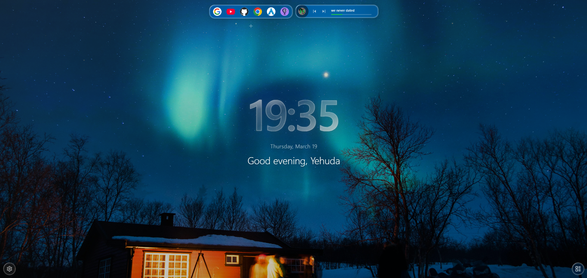

A personal dashboard that gives you everything you need to start your day with clarity and intention — right where you already are.

WindoM redefines the new tab experience. Instead of an empty page, every new tab opens to a thoughtfully designed personal dashboard that gives you everything you need to start your day with clarity and intention.
Built around a clean glassmorphism aesthetic, WindoM feels as good as it looks — smooth, minimal, and always out of the way when you need it to be.
At a glance, you see the time, the weather outside, your upcoming calendar events, what is playing on Spotify, and your tasks for the day. Everything you actually care about, nothing you do not.
When it is time to get things done, Focus Mode clears the noise and puts a countdown timer front and center so you can work without distraction. When you need to get somewhere, your pinned quick links and dock shortcuts are always one tab away.
Backgrounds shift with your mood — pull stunning imagery from Unsplash or bring your own. A new quote greets you each day. The greeting knows your name and the time.
Every detail of WindoM is configurable. Show what matters, hide what does not. Connect Google Calendar and Spotify if you want them, or keep it simple and offline. Your settings, your dashboard.
This is the new tab you always wanted.
Live clock with a personalized greeting that adapts to the time of day and knows your name.
Real-time weather for your location with temperature, conditions, and icons.
Dynamic backgrounds from Unsplash or your own images. Changes with your mood.
View upcoming events at a glance. Optionally connect Google Calendar for full sync.
See what is playing right now directly on your dashboard.
A quick-access task list that stays with you on every new tab.
Distraction-free focus sessions with a built-in countdown timer front and center.
Pin your most visited sites as quick-access links or dock shortcuts.
A new inspirational quote greets you every day.
WindoM does not track you. Your data lives in your browser. An account is entirely optional and only needed for Google Calendar and Spotify. No ads, no analytics, no data sold.